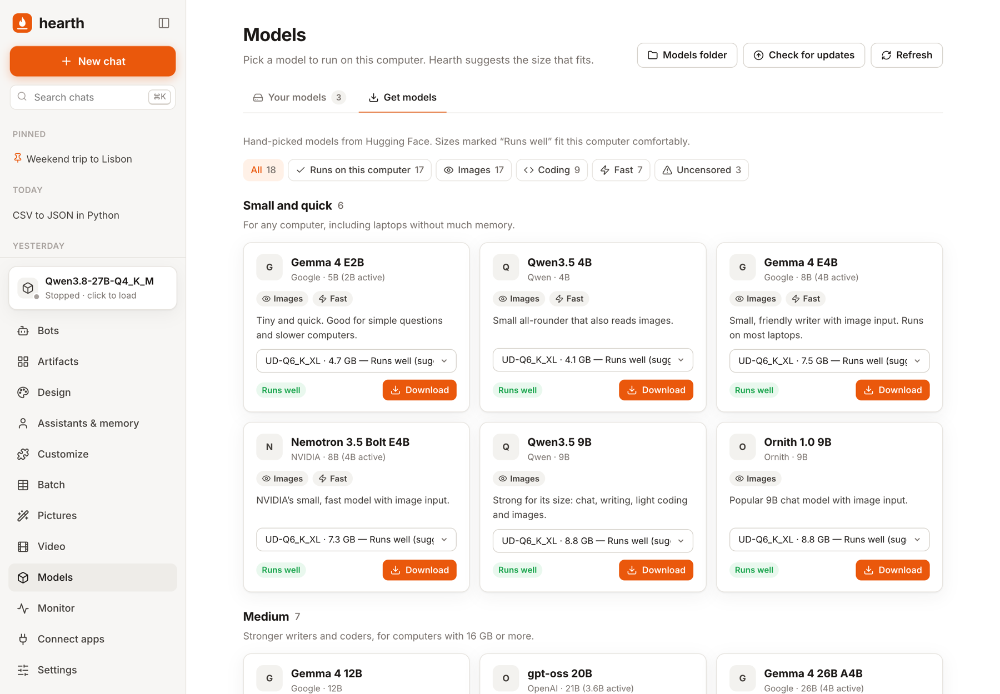
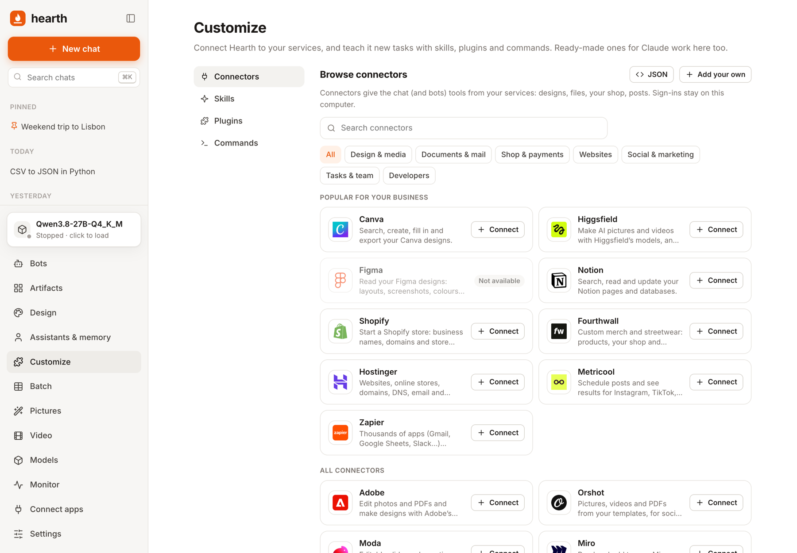
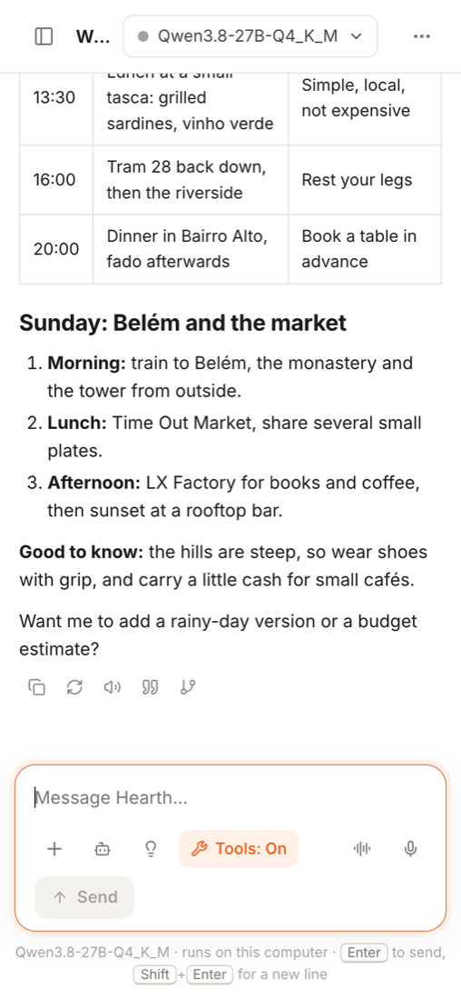

AI that runs on your own computer
Hearth is a free app for Mac and Windows. It downloads open AI models and runs them on your machine: chat, documents, voice, pictures, video and bots that work for you. No account, no subscription, no cloud.
For Windows 10 and 11, and for a Mac with Apple Silicon. Free and open source · version 0.2.34.

Everything stays with you
Your chats and files live in a folder on your computer. Hearth listens to this computer only.
No account, no subscription
Download it and use it. The models are open and free, and you choose which ones to get.
Your processor or graphics card
Hearth checks your computer and marks the models that will run well on it.
What it does
It tells you which model fits
Open Models and Hearth shows your processor, memory and graphics card, then marks the sizes that run well. Models you already have in LM Studio or Ollama are found and used as they are.

Bots that work on their own
Give a bot a task or a schedule, and write to it from your phone through its own Telegram bot, by text or by voice. It reads the files you send and writes documents and tables back.

Talk instead of typing
Speak a question, or have a whole conversation by voice. Speech is recognized on your computer, and answers can be read aloud in a natural voice.

Connect your services
Connectors, skills and plugins in Claude’s formats, with a directory of about 60 services. Each connector is off until you switch it on.

From your phone, too
Scan a QR code on the computer’s screen and use the whole app from a phone or tablet on the same Wi-Fi. The model still runs on your computer.

And more
Chat with documents
Text, images, PDF, Word, Excel and PowerPoint. Search every chat, branch a conversation, pin and archive.
It looks things up
The model searches the web, opens pages and reads the folders you allow. Every step shows in the chat.
Pictures and video
Draw pictures and make short clips with sound, on your own graphics card.
Design and small apps
Posters, social posts, logos and small web apps the model writes, with a live preview.
Hundreds of files at once
One instruction for a folder of photos or documents, saved as an Excel table.
A model for other apps
A local API that speaks the OpenAI and Anthropic formats, for coding tools and anything else that uses them.
Download Hearth
Free. Node.js comes inside the packages, so there is nothing else to install. version 0.2.34
Windows 10 or 11
Setup program · 24 MB
Run it. No administrator rights are needed. It adds Start menu and desktop shortcuts.
DownloadWindows, without installing
Zip archive · 35 MB
Unzip it anywhere and double-click Hearth.vbs.
DownloadLinux, or a Mac with an Intel chip? Hearth runs from the source code: how to run it.
The first start shows a warning
The packages are not signed yet, so the system asks before opening them.
- Windows: “Windows protected your PC” → More info → Run anyway.
- Mac: System Settings → Privacy & Security → Open Anyway next to Hearth.
First steps
- Open Models. Hearth shows your processor, memory and graphics card.
- Click Download engine if the Engine card asks for it. Hearth picks the right build for your computer.
- Pick a model marked Runs well and download it.
- Click Load and start chatting.
What your computer needs
- Memory: 16 GB runs the small models well; 32 GB or more runs the strong ones. A graphics card with 8 GB or more makes everything faster, but is not required.
- Disk: a model takes from 4 GB to 80 GB. Pictures need about 11 GB more, video about 25 GB more.
- Hearth ships no model and no engine. It downloads what you choose, when you press Download.
Privacy
- Hearth runs on your computer and listens on this computer only. Your chats and files stay in your own data folder.
- Nothing is sent anywhere unless you use a tool that needs the internet: a web search, opening a page, a connector you switched on, or a Telegram bot you connected.
- Web tools open public addresses only, never your computer or home network. Bots write only inside their own work folder.
- Everything Hearth downloads to run comes from its maker’s official releases and is checked against a checksum first.